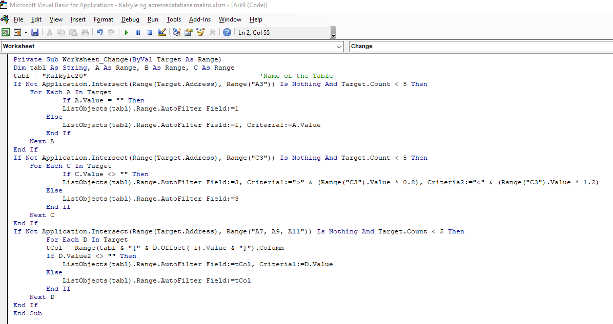
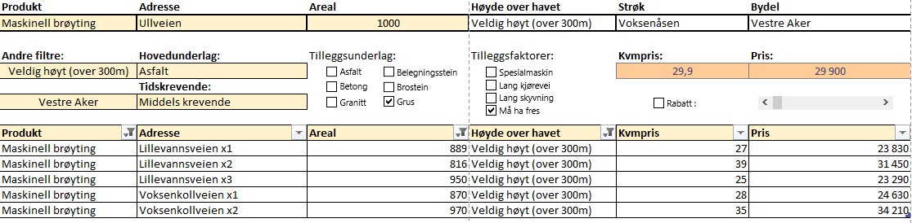
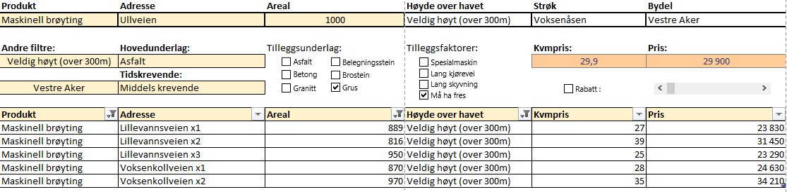

Prosjekt: Priskalkyle
Introduksjon
I mitt nåværende selskap, som tilbyr tjenester innen utendørs vedlikehold, så jeg at det var et stort behov for å kunne prise en del tjenester mer nøyaktig. For tjenester som snøbrøyting, strøing og feiing brukes det i hele bransjen i stor grad kvadratmeterpriser. Den jobben blir stort sett gjort manuelt og krever å ha ansatte med lang erfaring i bransjen for å få det riktig. Min tanke var at dette kunne gjøres mer nøyaktig, enklere og mer systematisk. I tillegg vil det være enklere å følge en felles strategi når alle som priser avtaler bruker det samme verktøyet for å regne ut en kvadratmeterpris.
Databehandling
For å få til dette var tanken å lage en priskalkyle for alle vintertjenester. Dette inkluderer tjenester som brøyting, strøing og salting. Dette er sesongbaserte tjenester som kunder betaler en fast sesongpris for, uansett hvor mye tjenesten må bli utført i løpet av en sesong. Med en priskalkyle vil en som skal prise en avtale legge inn visse prispåvirkende faktorer knyttet til adressen. Disse faktorene vektlegges i kalkylen og man vil få ut en veiledende pris. I tillegg tenkte jeg det kunne være lurt å få opp en oversikt over tilsvarende adresser/avtaler. Slik kan en som priser avtaler sammenligne veiledende pris med prisen på tilsvarende avtaler før det settes en endelig pris.
Jeg startet med å lage en tabell i Excel som automatisk filtreres når man fyller inn visse verdier i visse celler. Mitt utgangspunkt var å bruke vår egen adressedatabase som inneholder adresser, tjenester, priser, areal og mer. Denne dataen lastet jeg ned som en kommaseparert fil i Excel. Dette koblet jeg sammen med en oversikt over alle gatenavn i Oslo med tilhørende bydel og strøk. Slik ville jeg kunne filtrere for avtaler i samme bydel eller strøk. I tillegg ville det gi meg muligheten til å gi alle avtaler en indikator på hvor det lå i byen. Høydemeteren til en avtale påvirker prisen, ettersom adresser "i høyden" i all hovedsak opplever mer vintervær. Siden prisen en kunde betaler er sesongbasert, bør adresser "i høyden" derfor prises høyere. Derfor slo jeg sammen disse tabellene og lagde én tabell som inneholdt allerede eksisterende avtaler med tjenesten de betalte for, adressen, arealet, høyde over havet, prisen de betalte, pris per kvadratmeter, strøk og bydel.
Excel VBA makroer
For å gjøre denne kalkylen mest mulig brukervennlig, måtte jeg holde det enkelt og sørge for at det ønskede resultatet ble oppnådd med færrest mulig klikk. For å få til det tok jeg i bruk en makro. Ettersom jeg kun har jobbet med grunnleggende makroer før var dette litt ufordrende, men jeg fikk til slutt satt opp en kode som gjør at tabellen filtreres automatisk når visse verdier blir lagt inn.
Ferdig kalkyle
Den ferdige priskalkylen ble seende ut som på bildene under. Dette er fiktive adressr og priser. Til venstre er kalkylen slik den vil se ut før den blir tatt i bruk. Til høyre ser vi at brukeren har lagt inn visse verdier, tabellen er filtrert og kalkylen har gitt et prisforslag. Brukeren har blant annet lagt inn hvilken tjeneste som skal prises, i hvilket område avtaleadressen ligger og hvor stort arealet er. Den eneste subjektive verdien som legges inn av brukeren er i hvilken grad dette er en tidsmessig krevende adresse. Brukeren ønsker i dette tilfelle å prise en tjeneste kalt maskinell brøyting. Brukeren har i tillegg angitt at det er grus på adressen og at det må brukes fres, to faktorer som øker prisen. På bakgrunn av verdiene som ble lagt inn har tabellen blitt filtrert til å kun vise avtaler som har maskinell brøyting, som ligger over 300 meter over havet og som ligger i bydel Vestre Aker. Veiledende pris blir dermed 29 900 NOK, som er rett under 30 NOK per kvadratmeter.
 

Videre arbeid
Før denne kalkylen kan tas i bruk, må det selvfølgelig settes en prisstrategi. For hvilken pris som kommer ut av kalkylen er til syvende sist en ren strategisk beslutning. I tillegg må tabellen holdes oppdatert, noe som vil kreve en del manuelt arbeid.